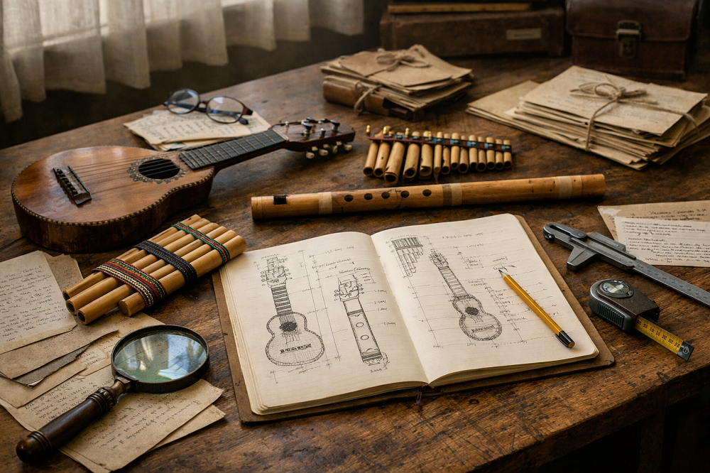
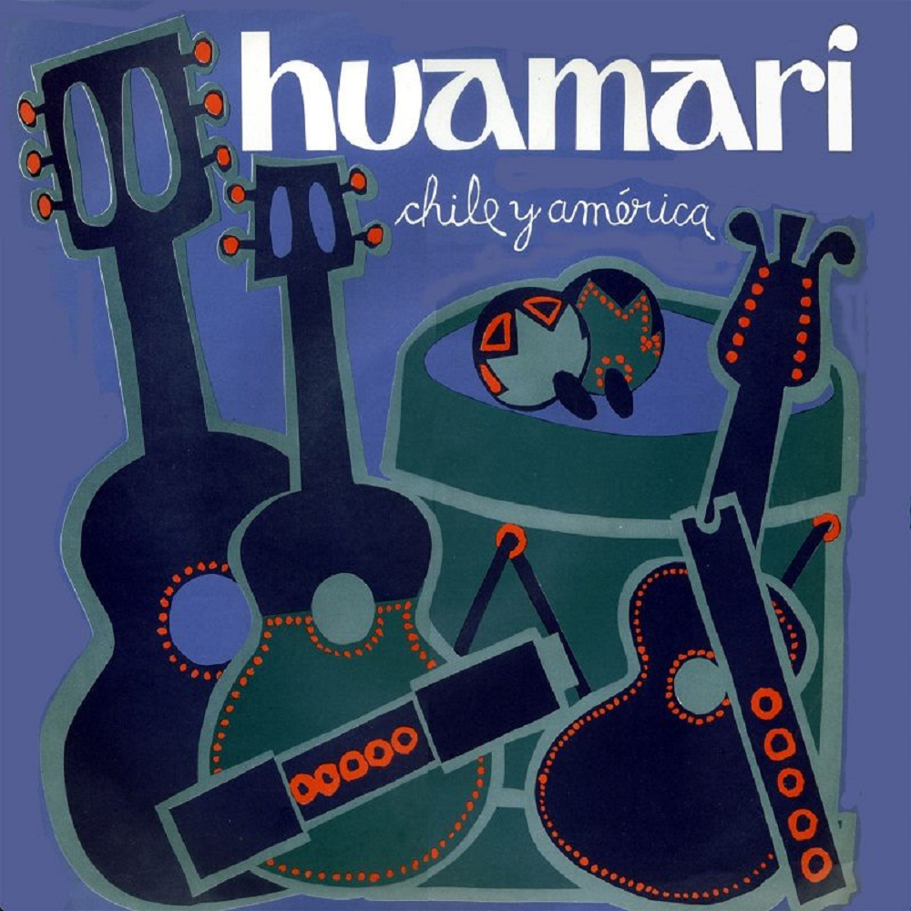
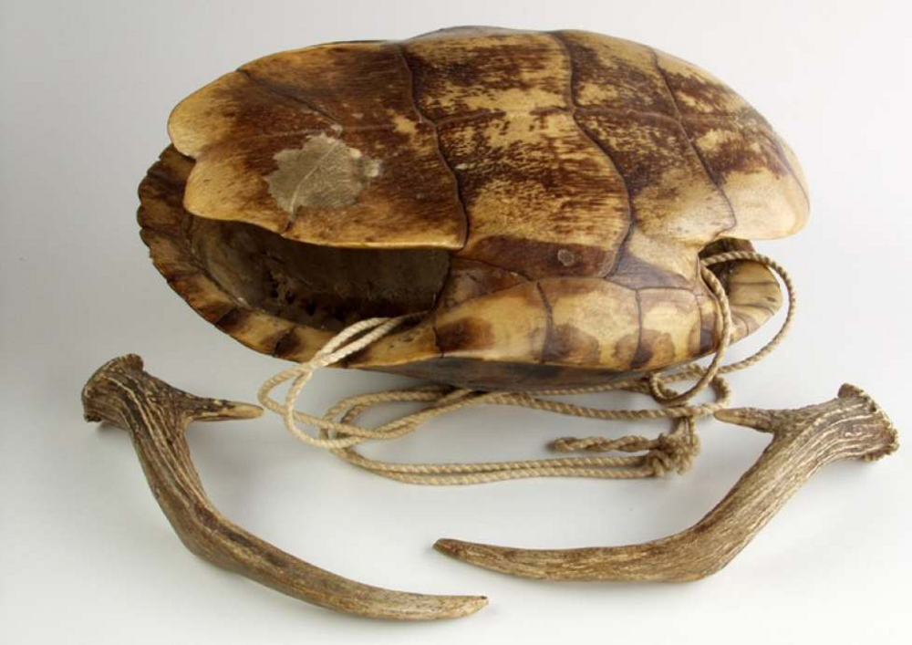

Blog Bitácora de un músico | El apunte más reciente
Cavernas musicales
| Publicado el 24 de abril de 2025 |
Lo dice en un artículo escrito por una de las pioneras de los estudios artísticos prehistóricos: la rumana Lya Dams, quien terminó especializándose en el arte rupestre del Levante español.
El texto en cuestión, titulado "Palaeolithic lithophones: descriptions and comparisons" (publicado en el Oxford Journal of Archaeology, 4 (1), March 1985, pp. 31-46), señala que los primeros seres humanos pudieron llegar a utilizar las estalactitas, las estalagmitas y otras formaciones calcáreas de las cavernas que habitaron como litófonos.
Blog Bitácora de un músico | La nota más reciente
Kamacheña: Una flauta andina de una mano
| Publicado el 29 de abril de 2025 |
La kamacheña o camacheña (también llamada quena jujeña, flautilla o quenilla de Pascua) es una flauta de caña de unos 30-35 cm de longitud, con el extremo distal cerrado y el proximal abierto. En este último se talla una particular embocadura, similar a la de una quena andina (una simple muesca) pero dotada de dos aletas laterales. En el proximal lleva tres orificios de digitación y uno de afinación frontales. Se interpreta en el departamento de Tarija (sur de Bolivia) y en puntos de las provincias de Jujuy y Salta (noroeste de Argentina).
Artículos y compilaciones
El erquencho y otros clarinetes idioglóticos
| Publicado el 11 de abril de 2025 |
Cuadernos de investigación musical, 17, enero-junio 2023, pp. 150-171.
En su trabajo de 1935 sobre instrumentos musicales entre los pueblos indígenas de América del Sur, Karl Gustav Izikowitz señaló la existencia de un grupo de clarinetes sin orificios de digitación e idioglóticos que denominó de "tipo meridional". Curiosamente, no incluyó en su lista a uno de los pocos (sino el único) sobrevivientes actuales de esa familia organológica: el erque o erquencho, un aerófono construido e interpretado en el noroeste de Argentina y el sur de Bolivia. De estructura relativamente sencilla, produce un sonido entre ronco, chillón y gangoso, en una gama limitada de notas, lo cual no impide que sea muy popular en su área de procedencia. Desafortunadamente, fuera de ella es, aún hoy, un desconocido. El artículo ofrece una revisión de las principales características de una familia casi perdida, y de un artefacto sonoro bastante invisible y escasamente ejecutado fuera de sus contextos más tradicionales.
Todos los artículos y compilaciones
Libros y otras publicaciones
Los parientes africanos de la banda mocha del Chota
| Publicado el 11 de abril de 2025 |
2.ed.rev. Bogotá: Wayrachaki Editora, 2021.
El texto describe someramente cómo surge y cuáles son los componentes de la expresión musical afro-ecuatoriana conocida como "banda mocha", originaria del valle del Chota, en las estribaciones andinas del norte de Ecuador. A continuación se rastrea el uso del instrumento más característico de este tipo de bandas –la bocina de calabaza– en África central y oriental, especialmente en conjuntos que imitan con tales bocinas el sonido de bandas militares europeas. Finalmente, con los datos aportados y las coincidencias encontradas, se sugiere un vínculo entre la banda mocha y las agrupaciones africanas relevadas.